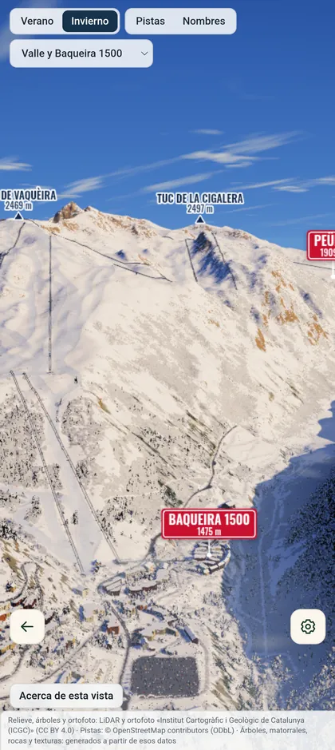
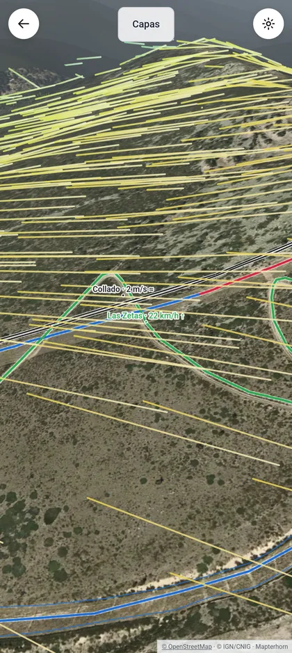

Temporada 2026/27 · 21 estaciones
La montaña,
antes de llegar.
Mapas 3D de las estaciones, nieve prevista y viajes con amigos. Todo lo que necesitas para decidir dónde esquiar, en un solo sitio.
Baqueira-Beret en 3D · recreación de invierno a partir de datos del ICGC y OpenStreetMap
Previsión
Dónde va a nevar
Nieve prevista para los próximos tres días en la cota media de cada estación. Se actualiza varias veces al día.
Previsión de modelos meteorológicos (Open-Meteo), no un parte de nieve. Qué está abierto hoy.
Estaciones
Empieza por las grandes
Cada ficha reúne el plano de pistas, el mapa 3D, la previsión y una guía práctica.

Mapas 3D
Entiende la estación antes de pisarla
Relieve LiDAR de 2 metros y fotografía aérea de 25 centímetros. Gira, acércate y sigue cada pista hasta su remonte.
- Sol y sombras por hora y día: dónde estará helado a primera hora y dónde pega el sol a mediodía.
- Viento por pista con la previsión de las próximas 48 horas.
- Inclinación real del terreno, metro a metro, para saber qué te espera.
- Remontes en movimiento, con su velocidad y tiempo de subida.


Con tu grupo
Del «¿vamos?» al «nos vemos arriba»
Cota nació para organizar escapadas de esquí con amigos. La cuenta es gratuita y es la misma en la web y en la app.
Viajes compartidos
Crea el viaje, elige estación y fechas e invita a tu grupo con un código de un solo uso. Las notas las ve todo el mundo.
Crear un viajeEncontrarse en pistas
En la app, tu grupo privado comparte ubicación solo mientras cada persona quiere, con su antigüedad y precisión a la vista.
Ver la appTu jornada, tuya
Registra el día en el móvil y guárdalo en privado. Nada se publica: ni recorridos ni posiciones salen de tu grupo.
Cómo tratamos tus datosCompara sin ruido
Kilómetros, cotas, desnivel y remontes medidos con el mismo criterio en todas las estaciones.
Abrir el comparadorAgenda
Próximas citas en la nieve
Solo eventos comprobados en la agenda oficial de cada estación.
6dic
Evento apertura temporada 26-27
Sierra Nevada; recinto exacto sin confirmar
Fuente: Cetursa · agenda oficial · comprobado el 6 de noviembre de 2026
12dic
Formigal SuperTest
Formigal · 09:30 h
Junto al telesilla Anayet, Formigal; coordenadas sin verificar
Fuente: Aramón · agenda conjunta · comprobado el 6 de noviembre de 2026
Llévatela a pistas
La app para Android guarda los mapas en el móvil para usarlos sin cobertura.